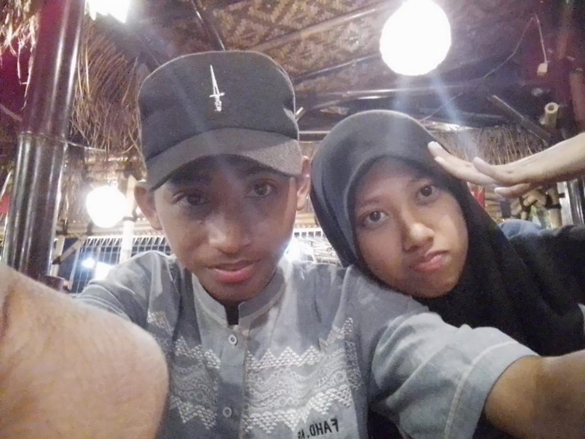

-Bila kuku kita panjang, yang dipotong adalah kuku bukannya jari. Begitu juga bila ada masalah sesama sahabat
atau saudara, yang dibuang adalah masalahnya bukan silaturahmi persahabatan atau persaudaraannya.
-Jangan hapus persaudaraan hanya karena sebuah kesalahan. Namun hapuslah sebuah kesalahan demi utuhnya
persaudaraan.
-Persaudaraan bukan hanya terjadi pada saat membutuhkan melainkan setiap saat.
-Saudara adalah seseorang yang kau temukan banyak persamaan dengan dirimu, namun tetap menghargai segala perbedaan
yang ada.